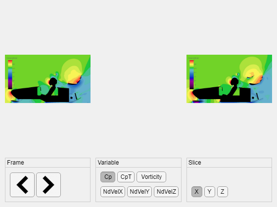

MATLAB_Postpro_App_v1
App to display pairs of CFD postpro images
Author: Caleb St. Hill (cish1g18@soton.ac.uk) Date: 01/10/2022
Contents
Setup
global frame fileExt optIm optIms bslIm bslIms VarSel SliceSel frameXYZ bslVars... optVars optVarInd bslVarInd bslSel optSel bslVarDir optVarDir... bslDir optDir bslDS optDS optSliceInd bslSliceInd optSlices... bslSlices; frame = [51,2,1]; %counter: keeps track of current frame for x,y,z slices frameXYZ = 1; VarSel = 'Cp'; SliceSel = 'X'; fileExt = '\*.png'; %default file extension
UI elements
App = uifigure('Name', 'Matlab Postpro App v1'); Grid = uigridlayout(App,[2,3]); Grid.RowHeight = {'1x',90}; Grid.ColumnWidth = {'1x','1x','1x'}; UI = uibuttongroup(Grid); UI.Title = 'Frame'; UI.Layout.Row = 2; UI.Layout.Column = 1; Var = uibuttongroup(Grid, 'SelectionChangedFcn', @varBtnCallback); Var.Title = 'Variable'; Var.Layout.Row = 2; Var.Layout.Column = 2; Slice = uibuttongroup(Grid, 'SelectionChangedFcn', @sliceBtnCallback); Slice.Title = 'Slice'; Slice.Layout.Row = 2; Slice.Layout.Column = 3; leftBtn = uibutton(UI, 'Icon', 'left.png', 'Text', '',... 'Position', [10, 10, 50, 50], 'ButtonPushedFcn', @leftBtnCallback); rightBtn = uibutton(UI, 'Icon', 'right.png', 'Text', '',... 'Position', [63, 10, 50, 50],'ButtonPushedFcn', @rightBtnCallback); % Variable selection buttons cpBtn = uitogglebutton(Var, 'Text', 'Cp', 'Position', [10, 40, 30, 22],... 'Tag', 'Cp'); cptBtn = uitogglebutton(Var, 'Text', 'CpT', 'Position',... [44, 40, 35, 22], 'Tag', 'CpT'); vorBtn = uitogglebutton(Var, 'Text', 'Vorticity', 'Position',... [83, 40, 60, 22], 'Tag', 'Vor'); velXBtn = uitogglebutton(Var, 'Text', 'NdVelX', 'Position',... [10, 10, 50, 22], 'Tag', 'UX'); velYBtn = uitogglebutton(Var, 'Text', 'NdVelY', 'Position',... [64, 10, 50, 22], 'Tag', 'UY'); velZBtn = uitogglebutton(Var, 'Text', 'NdVelZ', 'Position',... [118, 10, 50, 22], 'Tag', 'UZ'); % Slice selection buttons xBtn = uitogglebutton(Slice, 'Text', 'X', 'Position', [10, 10, 22, 22],... 'Tag', 'X'); yBtn = uitogglebutton(Slice, 'Text', 'Y', 'Position', [36, 10, 22, 22],... 'Tag', 'Y'); zBtn = uitogglebutton(Slice, 'Text', 'Z', 'Position', [62, 10, 22, 22],... 'Tag', 'Z');
Select BSL and Option Folders
%waitfor(msgbox('Select BSL directory')); %bslSel = uigetdir(); %waitfor(msgbox('Select Option directory')); %optSel = uigetdir(); bslSel = 'C:\Users\caleb\Documents\FS 2022-23\Postpro\MATLAB Postpro App\Example Images\Option'; optSel = 'C:\Users\caleb\Documents\FS 2022-23\Postpro\MATLAB Postpro App\Example Images\BSL'; bslVars = []; optVars = []; bslVarStruct = dir(bslSel); nBslVars = size(bslVarStruct); nBslVars = nBslVars(1); optVarStruct = dir(optSel); nOptVars = size(optVarStruct); nOptVars = nOptVars(1); for i=1:nBslVars bslVars = [bslVars, append('\', string(bslVarStruct(i).name))]; end for i=1:nOptVars optVars = [optVars, append('\', string(optVarStruct(i).name))]; end optVarInd = find(endsWith(optVars, VarSel)); bslVarInd = find(endsWith(bslVars, VarSel)); optVarDir = append(optSel, optVars(optVarInd)); bslVarDir = append(bslSel, bslVars(bslVarInd)); bslSlices = []; optSlices = []; bslSliceStruct = dir(bslVarDir); nBslSlices = size(bslSliceStruct); nBslSlices = nBslSlices(1); optSliceStruct = dir(optVarDir); nOptSlices = size(optSliceStruct); nOptSlices = nOptSlices(1); for i=1:nBslSlices bslSlices = [bslSlices, append('\', string(bslSliceStruct(i).name))]; end for i=1:nOptSlices optSlices = [optSlices, append('\', string(optSliceStruct(i).name))]; end optSliceInd = find(endsWith(optSlices, SliceSel)); bslSliceInd = find(endsWith(bslSlices, SliceSel)); optDir = append(optVarDir, optSlices(optSliceInd)); bslDir = append(bslVarDir, bslSlices(bslSliceInd));
Load all images in BSL and Option folders
bslDS = imageDatastore(append(bslDir,fileExt)); bslIms = readall(bslDS); optDS = imageDatastore(append(optDir,fileExt)); optIms = readall(optDS);
Display image pairs in app
bslIm = uiimage(Grid);
bslIm.Layout.Row = 1;
bslIm.Layout.Column = 1;
bslIm.ImageSource = bslIms{frame(1)};
optIm = uiimage(Grid);
optIm.Layout.Row = 1;
optIm.Layout.Column = 3;
optIm.ImageSource = optIms{frame(1)};
 Callback Functions
function leftBtnCallback(src,event) global frame optIm optIms bslIm bslIms SliceSel; if strcmp(SliceSel, 'X') frame(1) = mod(frame(1)-1,100); bslIm.ImageSource = bslIms{frame(1)}; optIm.ImageSource = optIms{frame(1)}; elseif strcmp(SliceSel, 'Y') frame(2) = mod(frame(2)-1,100); bslIm.ImageSource = bslIms{frame(2)}; optIm.ImageSource = optIms{frame(2)}; elseif strcmp(SliceSel, 'Z') frame(3) = mod(frame(3)-1,100); bslIm.ImageSource = bslIms{frame(3)}; optIm.ImageSource = optIms{frame(3)}; end end function rightBtnCallback(src,event) global frame optIm optIms bslIm bslIms SliceSel; if strcmp(SliceSel, 'X') frame(1) = mod(frame(1)+1,100); bslIm.ImageSource = bslIms{frame(1)}; optIm.ImageSource = optIms{frame(1)}; elseif strcmp(SliceSel, 'Y') frame(2) = mod(frame(2)+1,100); bslIm.ImageSource = bslIms{frame(2)}; optIm.ImageSource = optIms{frame(2)}; elseif strcmp(SliceSel, 'Z') frame(3) = mod(frame(3)+1,100); bslIm.ImageSource = bslIms{frame(3)}; optIm.ImageSource = optIms{frame(3)}; end end function varBtnCallback(src, event) % Callback function called by Var button group global VarSel SliceSel bslDS optDS bslIms optIms fileExt bslIm optIm... optVars bslVars optSlices bslSlices optDir bslDir frame... bslVarInd optVarInd optSel bslSel optVarDir bslVarDir; if strcmp(event.NewValue.Tag, 'Cp') VarSel = 'Cp'; elseif strcmp(event.NewValue.Tag, 'CpT') VarSel = 'CpT'; elseif strcmp(event.NewValue.Tag, 'Vor') VarSel = 'Vorticity'; elseif strcmp(event.NewValue.Tag, 'UX') VarSel = 'X'; elseif strcmp(event.NewValue.Tag, 'UY') VarSel = 'Y'; elseif strcmp(event.NewValue.Tag, 'UZ') VarSel = 'Z'; end optVarInd = find(endsWith(optVars, VarSel)); bslVarInd = find(endsWith(bslVars, VarSel)); optVarDir = append(optSel, optVars(optVarInd)); bslVarDir = append(bslSel, bslVars(bslVarInd)); bslSlices = []; optSlices = []; bslSliceStruct = dir(bslVarDir); nBslSlices = size(bslSliceStruct); nBslSlices = nBslSlices(1); optSliceStruct = dir(optVarDir); nOptSlices = size(optSliceStruct); nOptSlices = nOptSlices(1); for i=1:nBslSlices bslSlices = [bslSlices, append('\', string(bslSliceStruct(i).name))]; end for i=1:nOptSlices optSlices = [optSlices, append('\', string(optSliceStruct(i).name))]; end optSliceInd = find(endsWith(optSlices, SliceSel)); bslSliceInd = find(endsWith(bslSlices, SliceSel)); optDir = append(optVarDir, optSlices(optSliceInd)); bslDir = append(bslVarDir, bslSlices(bslSliceInd)); bslDS = imageDatastore(append(bslDir,fileExt)); bslIms = readall(bslDS); optDS = imageDatastore(append(optDir,fileExt)); optIms = readall(optDS); if SliceSel == 'X' bslIm.ImageSource = bslIms{frame(1)}; optIm.ImageSource = optIms{frame(1)}; elseif SliceSel == 'Y' bslIm.ImageSource = bslIms{frame(2)}; optIm.ImageSource = optIms{frame(2)}; elseif SliceSel == 'Z' bslIm.ImageSource = bslIms{frame(3)}; optIm.ImageSource = optIms{frame(3)}; end end function sliceBtnCallback(src, event) % Callback function called by Slice button group global SliceSel bslDS optDS bslIms optIms fileExt bslIm optIm... optVarDir bslVarDir optSlices bslSlices optDir bslDir frame; if event.NewValue.Tag == 'X' % set slice selction SliceSel = 'X'; elseif event.NewValue.Tag == 'Y' % set slice selction SliceSel = 'Y'; elseif event.NewValue.Tag == 'Z' % set slice selction SliceSel = 'Z'; end optSliceInd = find(endsWith(optSlices, SliceSel)); bslSliceInd = find(endsWith(bslSlices, SliceSel)); optDir = append(optVarDir, optSlices(optSliceInd)); bslDir = append(bslVarDir, bslSlices(bslSliceInd)); % use updated image path to display image pair bslDS = imageDatastore(append(bslDir,fileExt)); bslIms = readall(bslDS); optDS = imageDatastore(append(optDir,fileExt)); optIms = readall(optDS); if event.NewValue.Tag == 'X' bslIm.ImageSource = bslIms{frame(1)}; optIm.ImageSource = optIms{frame(1)}; elseif event.NewValue.Tag == 'Y' bslIm.ImageSource = bslIms{frame(2)}; optIm.ImageSource = optIms{frame(2)}; elseif event.NewValue.Tag == 'Z' bslIm.ImageSource = bslIms{frame(3)}; optIm.ImageSource = optIms{frame(3)}; end end
Functions
function delOut = delta(optIm, bslIm, var) % Function that uses lookup tables for Cp, CpT, Vorticity, and Vel XYZ % to convert image file into matrix of numerical values, based on the % RGB values for each pixel. end